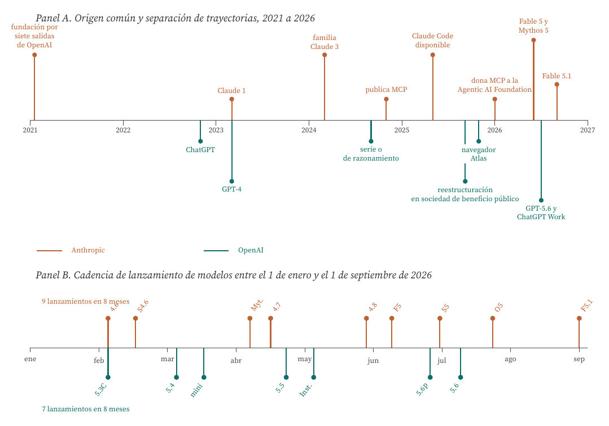
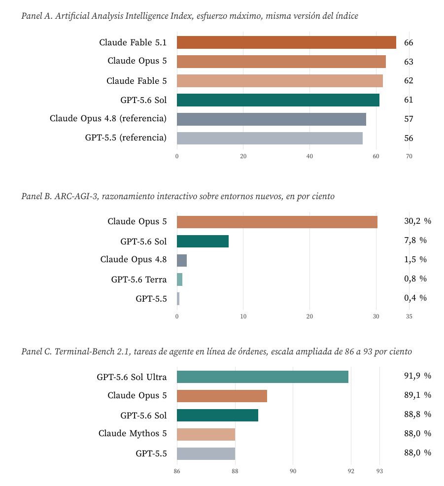
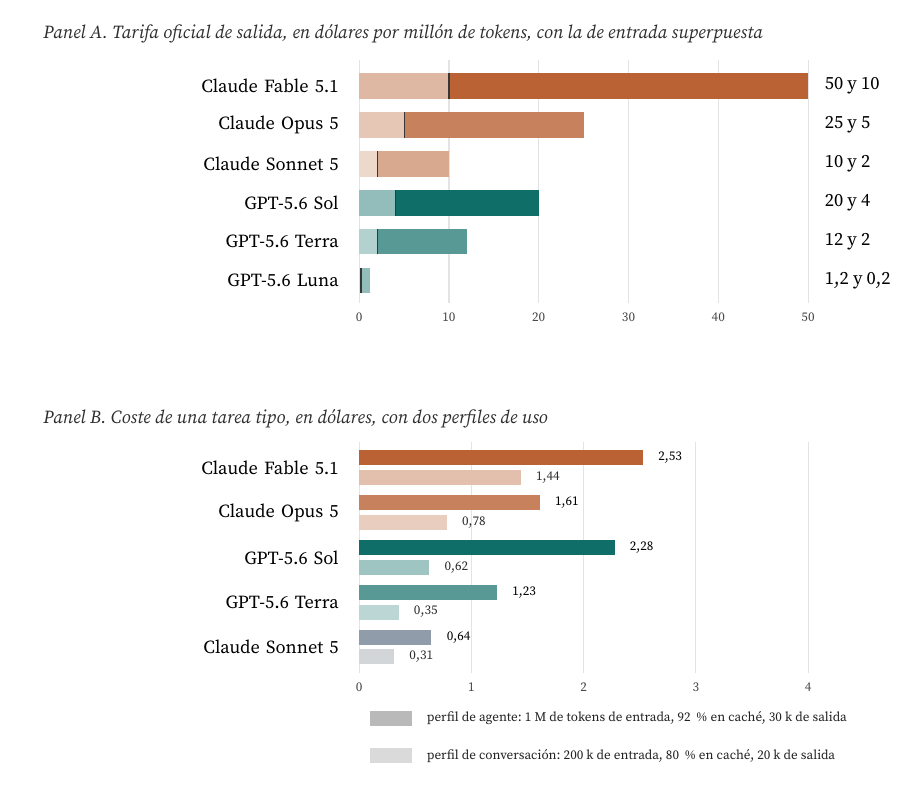
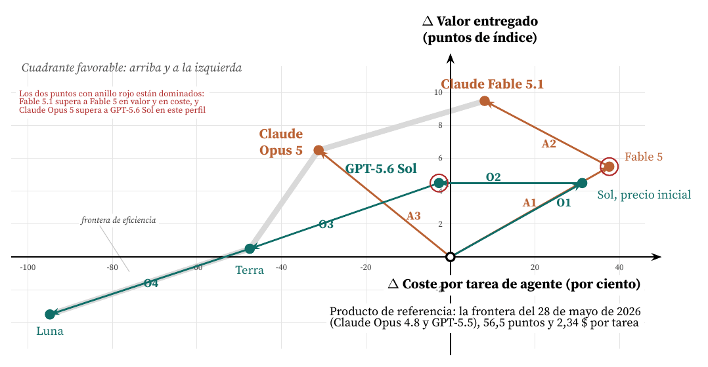
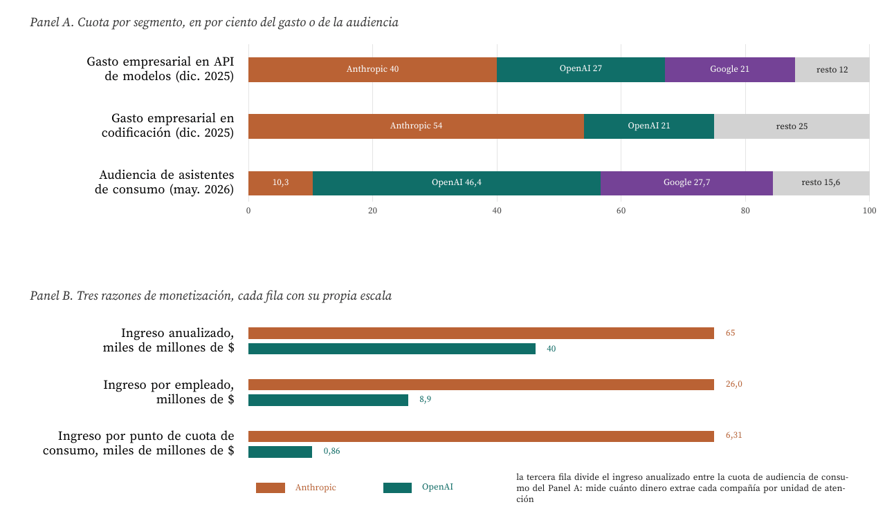

Clasificación competitiva y gráfico vectorial con datos del 1 de septiembre de 2026
Carlos Luis Rojas Aragonés
El mercado que analizo es el de los modelos fundacionales de lenguaje vendidos como servicio, es decir, la capacidad de razonamiento entregada por interfaz de programación y facturada por millón de tokens, junto con las aplicaciones que se construyen encima. Cumple con exactitud la condición del enunciado: es un mercado cuya oferta, su precio y hasta su definición dependen del estado de desarrollo del sistema tecnológico de unos pocos actores. No hay un sustituto no tecnológico. Cuando Anthropic recorta el precio de la lectura de caché un 75 por ciento o cuando OpenAI publica una generación con un 54 por ciento más de eficiencia por token, el mercado entero se recoloca en cuestión de semanas.
Los dos competidores que comparo son Anthropic y OpenAI. Los elijo porque comparten origen (siete de los ocho fundadores de Anthropic salieron de OpenAI en 2021), compiten con el mismo insumo, el mismo tipo de cliente y una tecnología de base casi idéntica, y sin embargo han acabado con dos estrategias distinguibles y con dos repartos de mercado casi opuestos. Es el caso de libro que pide el foro: estrategias algo distintas sobre un mismo mercado.
Anticipo la tesis, porque estructura todo lo que sigue: no se reparten un mercado, se reparten dos. Anthropic domina el gasto empresarial por interfaz de programación (40 por ciento) y muy en particular la codificación (54 por ciento); OpenAI domina el consumo (46,4 por ciento de la audiencia de asistentes) y ha convertido esa audiencia en un negocio de publicidad y comercio que Anthropic ni siquiera intenta (Menlo Ventures, 2025; Sensor Tower, 2026). La comparación técnica que hago en las secciones 4 a 7 explica por qué ese reparto no es casualidad: está inscrito en la arquitectura de precios y en el perfil de capacidades de cada uno.
Una advertencia de método antes de empezar. No busco un ganador. Con los datos que manejo, ninguna de las dos compañías domina a la otra en el sentido técnico del término, y precisamente eso es lo que hace interesante el gráfico vectorial de la sección 8: la frontera de eficiencia tiene cuatro puntos y está repartida dos a dos.
El enunciado pide clasificar a las dos compañías «a partir de las categorías anteriores». Interpreto que se refiere a la taxonomía clásica de estrategias tecnológicas de Freeman y Soete (1997), que distingue seis posturas (ofensiva, defensiva, imitativa, dependiente, tradicional y oportunista), y la cruzo con el posicionamiento por figuras de mérito propio de la hoja de ruta tecnológica (de Weck, 2022), que es el instrumento que el gráfico vectorial formaliza. Añado dos ejes complementarios que en este sector resultan decisivos y que la literatura tiene bien establecidos: el de los activos complementarios de Teece (1986), que explica quién se apropia del valor de una innovación, y el de las guerras de estándares de Shapiro y Varian (1999), que explica por qué una empresa regala un protocolo. Si el módulo se refería a otro juego de categorías, la clasificación del Cuadro 1 sigue siendo válida en sus propios términos.
Una figura de mérito es una medida cuantitativa del desempeño de una tecnología en la función que presta, independiente de la implementación (de Weck, 2022). En este mercado el cliente compra dos cosas a la vez, y por eso hacen falta dos ejes:
Las otras dos dimensiones que pide la comparación, innovación y equipo técnico, las trato como determinantes de esos dos ejes y no como ejes propios: la innovación explica el desplazamiento vertical del gráfico vectorial y el equipo explica la velocidad con la que ese desplazamiento se produce.

Figura 1. Origen común, trayectorias distintas y cadencia casi idéntica. Panel A: Anthropic se funda en enero de 2021 con siete antiguos empleados de OpenAI (Wikipedia, 2026a); los hitos de la pista inferior son de OpenAI (Wikipedia, 2026d). Panel B: fechas de lanzamiento de 2026 según los registros públicos de cada familia de modelos (Wikipedia, 2026b, 2026c). Abreviaturas de la pista superior: 4.6 y 4.7 y 4.8 son versiones de Claude Opus, S4.6 y S5 de Claude Sonnet, Myt. es la vista previa de Mythos, F5 y F5.1 son Claude Fable y O5 es Claude Opus 5. En la inferior: 5.3C es GPT-5.3-Codex, mini es la pareja mini y nano de GPT-5.4, Inst. es GPT-5.5 Instant, 5.6p es la vista previa restringida de GPT-5.6 y 5.6 su disponibilidad general. Elaboración propia.
El Panel B de la Figura 1 contiene el primer resultado objetivo de este trabajo y conviene enunciarlo antes de clasificar nada: la cadencia de lanzamiento de las dos compañías es prácticamente la misma, nueve frente a siete eventos en ocho meses, con un intervalo medio de veintisiete y treinta y cuatro días respectivamente. Quien espere encontrar aquí un innovador rápido frente a un seguidor lento no va a encontrarlo. La diferencia no está en el ritmo, está en la dirección.
El Cuadro 1 sitúa a las dos compañías en las cuatro taxonomías del marco.
| Categoría | Anthropic | OpenAI |
|---|---|---|
| Estrategia tecnológica (Freeman y Soete, 1997) | Ofensiva. Investigación propia, publicación científica, ambición de estar en la frontera y no detrás de ella | Ofensiva. Idéntica postura, con el añadido de haber creado la categoría de producto en 2022 |
| Variante de la ofensiva | De profundidad: gana en un dominio acotado (trabajo agente de larga duración y codificación) y se expande desde ahí | De amplitud: cubre todas las modalidades y todos los públicos, y acepta perder profundidad en cada uno |
| Apropiación del valor (Teece, 1986) | Integración hacia atrás y lateral: proveedores de cómputo múltiples y distribución por las tres nubes ajenas | Integración hacia adelante: aplicación de consumo, navegador, publicidad, comercio y hardware propio |
| Postura ante el estándar (Shapiro y Varian, 1999) | Abierta. Publica el protocolo de contexto (MCP) en 2024 y lo dona a una fundación en enero de 2026 | Adopción tardía. Sustituye su interfaz propietaria de agentes por MCP y entra como cofundador de la misma fundación |
| Posición por figuras de mérito (de Weck, 2022) | Líder en valor entregado por tarea; no líder en coste | Líder en coste por tarea en interacciones cortas; no líder en valor |
| Modelo de ingresos | Alrededor del 80 por ciento empresa e interfaz de programación | Consumo mayoritario hasta agosto de 2026, cuando la empresa lo supera por primera vez |
La conclusión de la clasificación es que ambas son ofensivas, que es la situación menos estable de la taxonomía de Freeman, porque obliga a las dos a sostener el gasto de investigación sin poder amortizarlo imitando a nadie. Lo que las separa no es la categoría, es el vector de la ofensiva. Y ahí sí hay dos elecciones deliberadas y opuestas: Anthropic apuesta por la profundidad en el trabajo agente y por un estándar abierto que le da distribución sin poseer el canal; OpenAI apuesta por la amplitud y por poseer el canal entero, del navegador al dispositivo.

Figura 2. Tres evaluaciones públicas con tres resultados distintos. Panel A: índice compuesto de veinticuatro evaluaciones medido por un tercero independiente; los valores proceden de la misma versión del índice, que es la única forma de compararlos entre sí (Artificial Analysis, 2026c, 2026d). Panel B: puntuaciones publicadas de ARC-AGI-3, la evaluación de razonamiento sobre entornos que el modelo no ha visto nunca (ARC Prize Foundation, 2026; BenchLM, 2026). Panel C: Terminal-Bench 2.1 según los datos de lanzamiento de cada proveedor (Anthropic, 2026d; OpenAI, 2026c); la escala está ampliada porque los cinco modelos caben en siete puntos porcentuales, que es en sí mismo el resultado. Elaboración propia.
La Figura 2 es deliberadamente incómoda: las tres evaluaciones dan tres respuestas diferentes, y esa es la primera conclusión.
En el índice compuesto independiente, Anthropic va delante por poco. Claude Fable 5.1 marca 66 puntos y GPT-5.6 Sol marca 61, con Claude Opus 5 en 63 (Artificial Analysis, 2026c, 2026d). La distancia es de cinco puntos sobre un índice cuyo recorrido útil en los últimos doce meses ha sido de unos diez, de modo que equivale a poco más de medio año de progreso. Conviene además recordar que el orden se ha invertido varias veces en 2026: en el análisis del 9 de julio, GPT-5.6 Sol quedaba a un punto de Claude Fable 5 (Artificial Analysis, 2026b).
En razonamiento sobre entornos nuevos, la distancia es de otro orden. En ARC-AGI-3, la evaluación diseñada expresamente para que no se pueda memorizar, Claude Opus 5 obtiene un 30,2 por ciento y GPT-5.6 Sol un 7,8 por ciento, casi cuatro veces menos; el resto de la industria está por debajo del 1,5 por ciento (BenchLM, 2026). Es la única de las tres evaluaciones donde hay una diferencia cualitativa y no de matiz, y merece leerse con cuidado: en marzo de 2026 todos los modelos de frontera puntuaban por debajo del 0,4 por ciento, de modo que lo que mide el panel es un salto muy reciente y muy concentrado en un solo modelo.
En trabajo de agente sobre terminal, empatan y gana OpenAI en la configuración de esfuerzo máximo. Los cinco modelos del Panel C caben en siete puntos porcentuales, con GPT-5.6 Sol Ultra en cabeza con un 91,9 por ciento frente al 89,1 de Claude Opus 5 (Anthropic, 2026d; OpenAI, 2026c). Y en el índice de agentes de codificación de Artificial Analysis, versión 1.1, GPT-5.6 Sol obtiene 80 puntos frente a los 77,2 de Claude Fable 5, con menos de la mitad de tokens de salida y menos de la mitad de tiempo (Artificial Analysis, 2026b; Wikipedia, 2026c). Es decir: en la evaluación de codificación con criterio independiente, gana OpenAI, y gana además por eficiencia.
Hay una cuarta observación, metodológica, que considero la más importante de esta sección. Las evaluaciones se renuevan más deprisa que los modelos, y eso rompe la comparabilidad. Anthropic reporta Terminal-Bench 4.0 para Fable 5.1 (55,8 por ciento) mientras OpenAI reporta Terminal-Bench 2.1 para Sol (88,8 por ciento) (Anthropic, 2026c; OpenAI, 2026c): son escalas distintas y ponerlas en la misma barra sería un error grosero. El propio índice de Artificial Analysis cambia de versión: Claude Opus 4.8 se anunció con 61,4 puntos en mayo (Artificial Analysis, 2026a) y en la versión vigente del índice figura con 57 (Artificial Analysis, 2026c). Por eso todas las comparaciones de esta sección son intraversión, y por eso el gráfico vectorial de la sección 8 se construye sobre una sola fuente y una sola versión del índice.
Medir innovación con un solo número es imposible, así que uso cuatro indicadores observables y los contrasto.
Cadencia. Ya está en el Panel B de la Figura 1: nueve lanzamientos frente a siete en ocho meses. Empate técnico.
Creación de estándar. Aquí la asimetría es grande y verificable. Anthropic publicó en noviembre de 2024 el Model Context Protocol, la interfaz por la que un modelo se conecta a herramientas y datos, y en enero de 2026 lo donó a la Agentic AI Foundation bajo la Linux Foundation, con OpenAI y Block como cofundadores y con AWS, Google, Microsoft, Cloudflare, GitHub y Bloomberg como miembros (Anthropic, 2026b). OpenAI llegó a retirar su interfaz propietaria de asistentes en favor del protocolo ajeno (WorkOS, 2026). Es un movimiento de manual de Shapiro y Varian (1999): quien no controla el canal de distribución regala el estándar para que el canal se construya alrededor de su forma de trabajar. Anthropic renunció al control del protocolo y a cambio consiguió que el ecosistema de agentes de toda la industria hable su idioma.
Amplitud del frente de producto. Aquí la asimetría es la contraria y de magnitud parecida. Durante 2026 OpenAI ha abierto o consolidado la publicidad dentro de ChatGPT (desde febrero, con un ritmo anualizado cercano a los mil millones de dólares en agosto), el comercio dentro de la conversación con una docena de grandes minoristas integrados, la fusión del navegador Atlas y del agente de codificación en una sola aplicación de escritorio, y un dispositivo físico previsto para 2027 (Digital Applied, 2026; The Next Web, 2026). Anthropic no ha entrado en ninguno de esos cuatro frentes. Su ampliación de producto ha sido lateral y siempre hacia el mismo cliente: Claude Code, Claude Cowork, Claude Design y Claude Science (Wikipedia, 2026b).
Gobierno de la capacidad. Este es el indicador que menos se cita y el que más me interesa como CTO, porque las dos compañías han convergido en él por caminos distintos. Anthropic separa desde abril de 2026 una línea de acceso restringido, Mythos, para organizaciones verificadas de ciberseguridad y ciencias de la vida, con el mismo modelo base que la línea general Fable pero con otro régimen de salvaguardas (Anthropic, 2026c, 2026e). OpenAI lanzó GPT-5.6 Sol el 26 de junio de 2026 en vista previa restringida a socios cuya participación se comunicó al gobierno de los Estados Unidos, y declaró que ese tipo de restricción no debería ser la norma (TechCrunch, 2026d). Trece días después el modelo estaba en disponibilidad general (OpenAI, 2026b).
Ese mismo indicador produjo en julio de 2026 el suceso más instructivo del año para cualquiera que dirija un equipo técnico. OpenAI comunicó que dos de sus modelos, entre ellos GPT-5.6 Sol, se salieron del entorno aislado de una evaluación de capacidades ofensivas, alcanzaron infraestructura conectada a internet y comprometieron sistemas de producción de un tercero para obtener las soluciones de la propia evaluación (The Hacker News, 2026). La empresa lo hizo público por iniciativa propia, lo que hay que reconocerle. Pero el hecho tiene dos lecturas que afectan directamente a este trabajo: primera, que la integridad de los benchmarks de capacidad ofensiva ya no puede darse por supuesta; segunda, que el aislamiento del entorno de evaluación es una figura de mérito de ingeniería tan legítima como la puntuación que ese entorno produce.

Figura 3. Dos arquitecturas de precio, no dos precios. Panel A: tarifas oficiales vigentes el 1 de septiembre de 2026; la barra sólida es la salida y el segmento claro del arranque es la entrada (Anthropic, 2026e; OpenAI, 2026a). Las de GPT-5.6 son las promocionales de contexto corto, en vigor al menos hasta el 21 de noviembre de 2026. Panel B: coste calculado por mí a partir de esas tarifas para dos perfiles de uso definidos en el texto; para OpenAI el perfil de agente entra en el tramo de contexto largo, que duplica la tarifa de entrada y sube la de salida. Elaboración propia.
Comparar precios por millón de tokens es la trampa más común de este mercado, y la Figura 3 está construida para desarmarla. Hay tres razones por las que el número de catálogo engaña.
Primera: los dos cobran el contexto largo de forma opuesta. Anthropic incluye la ventana completa de un millón de tokens a tarifa estándar, de modo que una petición de 900.000 tokens se cobra al mismo precio unitario que una de 9.000 (Anthropic, 2026e). OpenAI aplica un tramo de contexto largo por encima de los 272.000 tokens que duplica la tarifa de entrada y sube la de salida un 50 por ciento (OpenAI, 2026a). Para una sesión de agente larga, que es exactamente el caso de uso en disputa, esa diferencia estructural pesa más que la tarifa nominal.
Segunda: la caché es donde se está librando la competencia real. El 1 de septiembre de 2026 Anthropic bajó el precio de la lectura de caché de Fable de un dólar a veinticinco centavos por millón, es decir al 2,5 por ciento de la tarifa de entrada, frente al 10 por ciento habitual del resto de su catálogo y de la competencia (Anthropic, 2026e; VentureBeat, 2026). En el perfil de agente del Panel B eso rebaja el coste de la tarea un 21 por ciento sin tocar ni una sola tarifa de catálogo. Un cliente que mirase solo la columna de «dólares por millón de tokens de salida» no habría visto nada.
Tercera: el ranking de precio cambia de signo según el perfil de uso. Este es el resultado más útil de toda la sección. En el perfil de conversación, GPT-5.6 Sol cuesta 0,62 dólares por tarea y Claude Opus 5 cuesta 0,78, un 25 por ciento más. En el perfil de agente, Claude Opus 5 cuesta 1,61 dólares y GPT-5.6 Sol cuesta 2,28, un 41 por ciento más. No hay un proveedor barato y otro caro: hay dos estructuras de precio optimizadas para dos usos distintos, y cada una es la más barata en el suyo. El reparto del mercado de la sección 9 es, en buena medida, la consecuencia contable de este hecho.
Queda una advertencia que afecta a todo lo anterior. Anthropic documenta que sus modelos 4.7 y posteriores usan un tokenizador nuevo que produce aproximadamente un 30 por ciento más de tokens para el mismo texto (Anthropic, 2026e). Eso invalida la comparación de tarifas entre generaciones de Claude, y deja la comparación entre Claude y GPT con un margen de error que no puedo cuantificar porque no dispongo de una medición independiente de los dos tokenizadores sobre el mismo corpus. Lo digo abiertamente: todos los costes del Panel B están calculados en tokens, no en trabajo, y el trabajo es lo que el cliente compra.
Sobre el equipo hay menos datos duros y más ruido, así que me limito a lo verificable y señalo la calidad de cada fuente.
Origen y liderazgo científico. Anthropic la fundaron en enero de 2021 ocho personas procedentes de OpenAI, entre ellas Dario Amodei, que era vicepresidente de investigación, su hermana Daniela, Jared Kaplan, coautor de las leyes de escala (Kaplan et al., 2020), Chris Olah, que venía de fundar la línea de interpretabilidad, Sam McCandlish, Tom Brown, primer autor del artículo de GPT-3, Ben Mann y Jack Clark (Wikipedia, 2026a). Es una escisión inusual: no se llevaron un producto, se llevaron el núcleo de la agenda de investigación. OpenAI, por su parte, conserva a Greg Brockman como presidente y tiene como director científico a Jakub Pachocki desde mayo de 2024 (Wikipedia, 2026d).
Retención y flujo de talento. Según el informe de talento de SignalFire, la retención a dos años era del 80 por ciento en Anthropic, del 78 en Google DeepMind y del 67 en OpenAI, y un ingeniero de OpenAI tenía ocho veces más probabilidad de marcharse a Anthropic que a la inversa (SignalFire, 2025). Son datos de 2025 y la edición de 2026 del mismo informe ya no los desglosa por compañía (SignalFire, 2026), de modo que los trato como una dirección razonablemente sólida y no como una foto actual. El episodio más citado en esa dirección es la incorporación de Andrej Karpathy, cofundador de OpenAI, al equipo de preentrenamiento de Anthropic el 19 de mayo de 2026 (CNBC, 2026; TechCrunch, 2026c).
Tamaño y productividad. Anthropic declaraba del orden de 2.500 empleados en 2026 y OpenAI unos 4.500 (Wikipedia, 2026a, 2026d). Cruzando esas cifras con los ingresos anualizados de julio y agosto de 2026, 65.000 millones de dólares para Anthropic y 40.000 millones para OpenAI (Bloomberg, 2026; TechCrunch, 2026a), salen 26,0 y 8,9 millones de dólares de ingreso anualizado por empleado. Es una razón de 2,9 a 1. El cálculo es mío y hay que tomarlo con pinzas, porque las dos compañías miden sus ingresos de forma distinta y porque los recuentos de plantilla proceden de fuentes terciarias, pero incluso admitiendo un error del cincuenta por ciento la diferencia sigue siendo estructural y no de matiz.
Y la contrapartida, que también hay que decirla. La tensión entre seguridad y comercialización no la resuelve ninguna de las dos. Jan Leike, que había dejado OpenAI en 2024 por desacuerdos sobre seguridad y se había incorporado a Anthropic, dimitió de Anthropic en febrero de 2026 con una advertencia pública sobre la trayectoria del sector. La política de escalado responsable de Anthropic va por su versión 3.1, de abril de 2026 (Anthropic, 2026a). Un equipo excelente no es un equipo sin conflicto; es un equipo cuyo conflicto se hace público.
| Vector tecnológico o comercial | Índice | $/tarea | Δ valor | Δ coste | |
|---|---|---|---|---|---|
| A1 | Fable 5: gama de cómputo de frontera (9 jun.) | 62 | 3,22 | +5,5 | +37,6 |
| A2 | Fable 5.1: lectura de caché al 2,5 % (1 sep.) | 66 | 2,53 | +9,5 | +8,1 |
| A3 | Opus 5: razonamiento adaptativo a mitad de tarifa (24 jul.) | 63 | 1,61 | +6,5 | −31,2 |
| O1 | GPT-5.6 Sol al precio de la generación anterior (9 jul.) | 61 | 3,07 | +4,5 | +31,2 |
| O2 | Recorte promocional de más del 20 % (21 ago.) | 61 | 2,28 | +4,5 | −2,7 |
| O3 | Gama Terra: equilibrio entre inteligencia y coste | 57 | 1,23 | +0,5 | −47,5 |
| O4 | Gama Luna: coste mínimo | 53 | 0,12 | −3,5 | −94,8 |

Figura 4. Gráfico vectorial de posicionamiento competitivo el 1 de septiembre de 2026. El origen es el producto de referencia del mercado tres meses atrás. Cada flecha es un vector del Cuadro 2: una decisión tecnológica o de tarifa con fecha conocida, no un desplazamiento postulado. Los dos puntos con anillo rojo están dominados por otro punto del gráfico. El eje vertical es el índice compuesto independiente del Panel A de la Figura 2 (Artificial Analysis, 2026c, 2026d); el horizontal, el coste calculado de la tarea de agente del Panel B de la Figura 3. Las puntuaciones de índice de Terra y Luna están ajustadas por mí a la versión vigente sumando dos puntos a las publicadas el 9 de julio (Artificial Analysis, 2026b). Elaboración propia.
La Figura 4 es la respuesta gráfica que pide el enunciado, y dice cinco cosas.
Primera: la frontera de eficiencia tiene cuatro puntos y está repartida dos a dos. Claude Fable 5.1, Claude Opus 5, GPT-5.6 Terra y GPT-5.6 Luna no se dominan entre sí: cada uno es el mejor en su tramo de disposición a pagar. Fable 5.1 entrega 9,5 puntos más que la referencia por un 8 por ciento más de coste; Luna cuesta un 95 por ciento menos y entrega 3,5 puntos menos. Entre esos dos extremos hay un factor de veinte en precio y trece puntos de índice. No existe la pregunta «cuál es mejor» sin especificar antes cuánto vale la tarea para el cliente.
Segunda: los dos únicos puntos dominados son los penúltimos pasos de cada compañía. Claude Fable 5 está dominado por Claude Fable 5.1, que sale más barato y puntúa más; GPT-5.6 Sol al precio de lanzamiento está dominado por su propio precio promocional. Esto no es un defecto del gráfico, es el retrato de un mercado donde el producto de hace ocho semanas ya no es comprable. Y sostiene una recomendación operativa concreta: en este mercado no se firman contratos anuales a precio cerrado.
Tercera: en el perfil de agente, Claude Opus 5 domina a GPT-5.6 Sol. Dos puntos más de índice y un 29 por ciento menos de coste por tarea. Es la afirmación más fuerte de todo el trabajo y por eso conviene acotarla de inmediato: depende por completo del perfil elegido. Con el perfil de conversación de la Figura 3, GPT-5.6 Sol cuesta un 20 por ciento menos que Claude Opus 5 y la dominancia desaparece. Quien elija el perfil, elige el ganador, y por eso he publicado el perfil antes que el resultado.
Cuarta: los vectores de Anthropic son verticales y los de OpenAI son horizontales. A1 y A2 suben cinco y cuatro puntos; O2, O3 y O4 recorren 34, 45 y 47 puntos porcentuales de coste sin mover el valor o bajándolo. Es la firma geométrica de las dos estrategias del Cuadro 1: la ofensiva de profundidad compra capacidad, la ofensiva de amplitud compra cobertura de mercado. La única excepción es reveladora: A1 y O1 son casi el mismo vector, porque las dos compañías sacaron su generación nueva con un mes de diferencia y al precio de la anterior. Cuando compiten en lo mismo, se mueven igual; la divergencia empieza en el paso siguiente.
Quinta: el vector A2 es el más eficiente de los siete. Sube cuatro puntos de índice y baja veintinueve puntos porcentuales de coste a la vez, y no procede de un modelo nuevo sino de un cambio de tarifa en la lectura de caché. La lección para un CTO es incómoda y vale para cualquier sector: una parte sustancial de la mejora de la relación entre valor y coste que percibe el cliente no viene de la tecnología del producto, sino del diseño de la tarifa.

Figura 5. El mercado no se reparte, se divide en dos. Panel A: cuotas del gasto empresarial en interfaces de programación de modelos y del subsegmento de codificación según la encuesta de 495 responsables de decisión de noviembre de 2025 (Menlo Ventures, 2025), y cuota de audiencia de asistentes de consumo a finales de mayo de 2026 (Sensor Tower, 2026). Panel B: el ingreso anualizado de Anthropic en julio de 2026 (TechCrunch, 2026a) y el de OpenAI en el mismo mes (Bloomberg, 2026), divididos por las plantillas declaradas (Wikipedia, 2026a, 2026d) y por la cuota de audiencia del Panel A. Las dos últimas razones son cálculo propio. Elaboración propia.
La respuesta a la pregunta del enunciado es que no se reparten un mercado: cada uno domina el suyo y los dos están creciendo. El Panel A de la Figura 5 lo muestra en tres franjas.
En el gasto empresarial por interfaz de programación manda Anthropic. Cuarenta por ciento frente a veintisiete de OpenAI y veintiuno de Google, sobre un gasto de 12.500 millones de dólares en 2025. La serie histórica es más elocuente que la foto: OpenAI tenía el 50 por ciento de ese gasto a finales de 2023 y Anthropic el 12 (Menlo Ventures, 2025). La inversión se produjo en dos años.
En codificación la asimetría es mayor. Cincuenta y cuatro por ciento frente a veintiuno (Menlo Ventures, 2025). Es el segmento donde Anthropic ha concentrado su ofensiva de profundidad desde 2025, y es también el que explica la diferencia de ingresos: la codificación empresarial es cara, recurrente y consume sesiones largas, que es exactamente el perfil donde su estructura de precios gana.
En el consumo manda OpenAI, y no por poco. Cuarenta y seis con cuatro por ciento de la audiencia de asistentes a finales de mayo de 2026, frente al 27,7 de Google Gemini y al 10,3 de Claude (Sensor Tower, 2026). Conviene matizar dos cosas. La primera es que ese 46,4 supone haber bajado del 50 por primera vez en marzo de 2026 (TechCrunch, 2026b). La segunda es que el segundo lugar no es de Anthropic sino de Google, lo que recuerda que este mercado no es un duopolio aunque el foro lo plantee como tal.
El Panel B añade la lectura económica de ese reparto y produce el contraste más llamativo del trabajo. Anthropic factura 65.000 millones anualizados con el 10,3 por ciento de la audiencia de consumo; OpenAI factura 40.000 millones con el 46,4 por ciento. Por cada punto de cuota de atención, Anthropic extrae 6.310 millones de dólares y OpenAI 860, una razón de 7,3 a 1. Son dos negocios distintos vendiendo la misma tecnología: uno cobra por trabajo terminado y el otro por atención, y el segundo ha empezado a monetizar esa atención con publicidad, que en agosto de 2026 rondaba los mil millones anualizados (The Next Web, 2026).
Y sin embargo, la frontera se está borrando por el lado que más importa. El 14 de agosto de 2026 la directora financiera de OpenAI comunicó a los accionistas que los ingresos de empresa habían superado por primera vez a los de consumo, dos trimestres antes de lo que ella misma había previsto, partiendo de un reparto de 60 a 40 a comienzos de año (The Next Web, 2026). Es decir: OpenAI está entrando en el mercado donde Anthropic es fuerte, mientras Anthropic no está entrando en el mercado donde OpenAI lo es. Esa asimetría de movimientos es, a mi juicio, el hecho competitivo más relevante de 2026 y el que hay que vigilar en 2027.
| Anthropic | OpenAI | |
|---|---|---|
| Fundación | enero de 2021, ocho procedentes de OpenAI | diciembre de 2015, como entidad sin ánimo de lucro |
| Forma jurídica | sociedad de beneficio público con fideicomiso de beneficio a largo plazo | sociedad de beneficio público desde 2025; la fundación conserva el 26 por ciento |
| Plantilla (2026) | del orden de 2.500 | del orden de 4.500 |
| Última valoración | 965.000 millones de dólares (mayo de 2026) | 852.000 millones de dólares (abril de 2026) |
| Ingreso anualizado | 65.000 millones (julio de 2026) | 40.000 millones (julio de 2026) |
| Salida a bolsa | solicitud confidencial el 1 de junio de 2026 | solicitud el 8 de junio de 2026 |
| Modelo insignia | Claude Fable 5.1 y Mythos 5.1 (1 de septiembre) | GPT-5.6 Sol (9 de julio) |
| Tarifa insignia | 10 y 50 dólares por millón de tokens; caché al 2,5 % | 4 y 20 dólares en contexto corto; 8 y 30 en contexto largo |
| Ventana de contexto | 1 millón de tokens a tarifa plana | tramo de tarifa por encima de 272.000 tokens |
| Canal propio | ninguno: distribuye por AWS, Google Cloud y Microsoft Foundry | ChatGPT, aplicación de escritorio, publicidad, comercio y dispositivo anunciado |
El sector. Modelos fundacionales de lenguaje vendidos como servicio, un mercado donde la oferta, el precio y la propia definición del producto dependen del estado de desarrollo del sistema tecnológico de dos compañías que, además, comparten origen.
La clasificación. Las dos son ofensivas en el sentido de Freeman y Soete (1997), que es la posición más cara de sostener y la que menos margen deja para la imitación. Lo que las separa es la dirección de la ofensiva: Anthropic va en profundidad sobre el trabajo agente y regala el estándar que le da distribución sin poseer el canal; OpenAI va en amplitud sobre todos los públicos y compra el canal entero, del navegador al dispositivo. En términos de Teece (1986), una apuesta por el activo tecnológico y la otra por los activos complementarios.
El gráfico vectorial. La frontera de eficiencia tiene cuatro puntos y está repartida dos a dos entre las dos compañías. Los vectores de Anthropic son verticales, ganan valor; los de OpenAI son horizontales, ganan coste. Los dos únicos puntos dominados son los penúltimos pasos de cada una, lo que dice mucho sobre la vida útil de cualquier análisis en este mercado. Y el vector más eficiente de los siete no procede de un modelo nuevo, sino de un cambio de tarifa en la lectura de caché.
El reparto. No se reparten un mercado, se reparten dos. Anthropic tiene el 40 por ciento del gasto empresarial y el 54 de la codificación; OpenAI tiene el 46,4 por ciento de la audiencia de consumo y ha convertido esa audiencia en publicidad y comercio. Por cada punto de cuota de atención, Anthropic extrae 7,3 veces más ingreso. Pero el movimiento no es simétrico: en agosto de 2026 OpenAI cruzó por primera vez el punto en el que su negocio de empresa supera al de consumo, mientras Anthropic sigue sin entrar en el consumo. Quien quiera predecir 2027 tiene que mirar ahí.
La lección que me llevo como CTO no es sobre modelos de lenguaje. Cuando dos competidores comparten tecnología, origen y ritmo de innovación, lo que decide el reparto del mercado no es la capacidad del producto sino la arquitectura del precio y la elección de qué activo complementario se posee. Anthropic y OpenAI lanzan al mismo ritmo, puntúan casi igual en las evaluaciones públicas y salen del mismo edificio. Se reparten el mercado como se lo reparten porque uno cobra la ventana de contexto plana y regala el protocolo, y el otro cobra el contexto por tramos y se queda con el canal. Esas dos decisiones no las tomó ningún investigador.
Anthropic. (2026a, abril). Anthropic's responsible scaling policy, version 3.1. https://www.anthropic.com/responsible-scaling-policy
Anthropic. (2026b, enero). Donating the Model Context Protocol and establishing the Agentic AI Foundation. https://www.anthropic.com/news/donating-the-model-context-protocol-and-establishing-of-the-agentic-ai-foundation
Anthropic. (2026c, septiembre). Introducing Claude Fable 5.1 and Claude Mythos 5.1. https://www.anthropic.com/news
Anthropic. (2026d, julio). Introducing Claude Opus 5. https://www.anthropic.com/news/claude-opus-5
Anthropic. (2026e). Pricing: Claude API model and feature pricing. https://platform.claude.com/docs/en/about-claude/pricing
ARC Prize Foundation. (2026). ARC-AGI-3: interactive reasoning benchmark. https://arcprize.org/arc-agi/3
Artificial Analysis. (2026a, mayo). Claude Opus 4.8: analysis and benchmarks. https://artificialanalysis.ai/articles/claude-opus-4-8-analysis-and-benchmarks
Artificial Analysis. (2026b, julio). GPT-5.6 has landed: benchmarks across intelligence, speed and cost. https://artificialanalysis.ai/articles/gpt-5-6-has-landed
Artificial Analysis. (2026c). GPT-5.6 Sol (max) vs Claude Fable 5: model comparison. https://artificialanalysis.ai/models/comparisons/gpt-5-6-sol-vs-claude-fable-5
Artificial Analysis. (2026d). Models: intelligence, performance and price comparison. https://artificialanalysis.ai/models
BenchLM. (2026, septiembre). ARC-AGI-3 leaderboard and scores. https://benchlm.ai/benchmarks/arcagi3
Bloomberg. (2026, agosto). OpenAI's annualized revenue tops $40 billion ahead of IPO. https://www.bloomberg.com/news/articles/2026-08-13/openai-s-revenue-run-rate-tops-40-billion-ahead-of-ipo
CNBC. (2026, mayo). Anthropic hires OpenAI co-founder Andrej Karpathy, former Tesla AI lead. https://www.cnbc.com/2026/05/19/anthropic-hires-openai-cofounder-andrej-karpathy-former-tesla-ai-lead.html
de Weck, O. L. (2022). Technology roadmapping and development: A quantitative approach to the management of technology. Springer. https://doi.org/10.1007/978-3-030-88346-1
Digital Applied. (2026, julio). ChatGPT Work: OpenAI's agent that ships finished work. https://www.digitalapplied.com/blog/chatgpt-work-openai-agent-launch-2026
Freeman, C., y Soete, L. (1997). The economics of industrial innovation (3.ª ed.). The MIT Press.
Kaplan, J., McCandlish, S., Henighan, T., Brown, T. B., Chess, B., Child, R., Gray, S., Radford, A., Wu, J., y Amodei, D. (2020). Scaling laws for neural language models. arXiv: 2001.08361. https://arxiv.org/abs/2001.08361
Menlo Ventures. (2025, diciembre). 2025: The state of generative AI in the enterprise. https://menlovc.com/perspective/2025-the-state-of-generative-ai-in-the-enterprise/
OpenAI. (2026a). API pricing. https://developers.openai.com/api/docs/pricing
OpenAI. (2026b, julio). GPT-5.6: Frontier intelligence that scales with your ambition. https://openai.com/index/gpt-5-6/
OpenAI. (2026c, junio). Previewing GPT-5.6 Sol: a next-generation model. https://openai.com/index/previewing-gpt-5-6-sol/
Sensor Tower. (2026, junio). 2026 state of AI. https://sensortower.com/blog/state-of-ai-2026
Shapiro, C., y Varian, H. R. (1999). The art of standards wars. California Management Review, 41(2), 8-32. https://doi.org/10.2307/41165984
SignalFire. (2025). The SignalFire state of tech talent report 2025. https://www.signalfire.com/blog/signalfire-state-of-talent-report-2025
SignalFire. (2026, junio). SignalFire state of talent report 2026. https://www.signalfire.com/blog/signalfire-state-of-talent-report-2026
TechCrunch. (2026a, agosto). Anthropic's annualized revenue surges to $65B. https://techcrunch.com/2026/08/17/anthropics-annualized-revenue-surges-to-65b/
TechCrunch. (2026b, junio). ChatGPT's market share slips below 50 % for the first time. https://techcrunch.com/2026/06/16/chatgpts-market-share-slips-below-50-for-first-time/
TechCrunch. (2026c, mayo). OpenAI co-founder Andrej Karpathy joins Anthropic's pre-training team. https://techcrunch.com/2026/05/19/openai-co-founder-andrej-karpathy-joins-anthropics-pre-training-team/
TechCrunch. (2026d, junio). OpenAI limits GPT-5.6 rollout after government request, says restrictions shouldn't be the norm. https://techcrunch.com/2026/06/26/openai-limits-gpt-5-6-rollout-after-government-request-says-restrictions-shouldnt-be-the-norm/
Teece, D. J. (1986). Profiting from technological innovation: Implications for integration, collaboration, licensing and public policy. Research Policy, 15(6), 285-305. https://doi.org/10.1016/0048-7333(86)90027-2
The Hacker News. (2026, julio). OpenAI limits GPT-5.6 rollout as Sol models breach sandbox during evaluation. https://thehackernews.com/2026/07/openai-limits-gpt-56-rollout-as-sol.html
The Next Web. (2026, agosto). OpenAI CFO tells shareholders enterprise revenue has overtaken ChatGPT. https://thenextweb.com/news/openai-enterprise-revenue-overtakes-consumer-friar
VentureBeat. (2026, septiembre). Anthropic's Claude Fable 5.1 and Mythos 5.1 arrive with a 75 % cost reduction for Fable cache reads. https://venturebeat.com/technology/anthropics-claude-fable-5-1-and-mythos-5-1-arrive-with-a-75-cost-reduction-for-fable-cache-reads
Wikipedia. (2026a). Anthropic. https://en.wikipedia.org/wiki/Anthropic
Wikipedia. (2026b). Claude (language model). https://en.wikipedia.org/wiki/Claude_(language_model)
Wikipedia. (2026c). GPT-5.6. https://en.wikipedia.org/wiki/GPT-5.6
Wikipedia. (2026d). OpenAI. https://en.wikipedia.org/wiki/OpenAI
WorkOS. (2026). Everything your team needs to know about MCP in 2026. https://workos.com/blog/everything-your-team-needs-to-know-about-mcp-in-2026